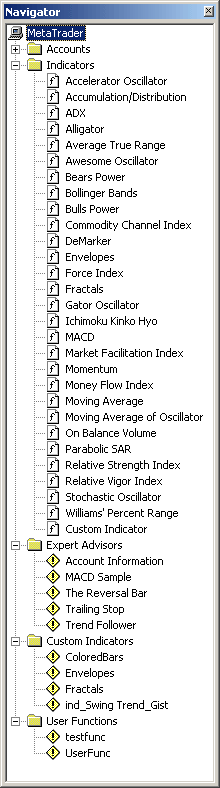
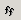

Окно
Навигатор
Окно навигатор (Navigator) является служебным наряду с окном "Обзор
рынка" (Market Watch) и "Терминалом" (Terminal). Это
окно может быть выключено/включено при помощи нажатия комбинации клавиш
"Ctrl - N", из главного меню "Вид - Навигатор"
(View - Navigator), либо нажатием на стандартной
панели инструментов кнопки  .
.
 Окно "Навигатор" позволяет быстро получить доступ к различным
возможностям клиентского терминала MetaTrader. Список возможностей
представлен в виде дерева и содержит 5 групп: "Счета" (Accounts), "Индикаторы" (Indicators) , "Советники" (Expert
Advisors), "Пользовательские индикаторы" (Custom
Indicators) и "Пользовательские функции" (User
Functions), которые могут быть раскрыты нажатием левой кнопки мыши
на знаке "+" рядом с соответствующей группой. В группе "Счета" (Accounts) содержится список открытых счетов
пользователя. Нажатие правой кнопки мыши на группе позволит через
контекстное меню открыть новый демо-счет. Двойное нажатие левой кнопки
мыши на одном из доступных счетов позволяет переключаться с одного счета
на другой.
Открыть новый демо счет можно и из контекстного меню,
вызываемого нажатием правой кнопки мыши на любом из счетов , выбрав
команду "Открыть счет" (Open an
Account).
Из данного контекстного меню можно активизировать
выбранный счет, выбрав команду "Авторизация" (Login) и
удалить выбранный счет, выполнив команду "Удалить" (Delete).
В группе "Индикаторы" (Indicators)
содержится список доступных основных технических индикаторов. У этой
группы контекстного меню нет. Двойным нажатием левой кнопки мыши можно
добавить выбранный индикатор в активное окно графика. В любое открытое
окно графика можно добавить выбранный индикатор из окна навигатор (Navigator), используя технологию "Drag'n'Drop". Одинарным нажатием левой кнопки мыши
можно добавить выбранный индикатор в активное окно графика из всплывающего
меню при нажатии кнопки "Индикаторы"  , находящейся на панели "Графические инструменты". Во
всех перечисленных случаях для индикаторов, требующих настройки
параметров, открывается окно настройки параметров выбранного индикатора.
Индикатор можно поместить в активное окно графика или убрать из активного
окна графика через главное меню "Вставка" - "Индикаторы" (Insert - Idicators) и из контекстного меню окна
графика.
В группе "Советники" (Expert Advisors) содержится список всех
доступных советников. Советник - это программа, написанная на языке MetaQuotes Language II и реализующая какую-либо
торговую стратегию. Советник имеет доступ к данным торгового терминала и
может автоматически совершать торговые операции. Нажатие правой кнопки
мыши на группе позволит через контекстное меню создать новый
советник.
При помощи контекстного меню можно начать создание нового
советника (Create a new Expert), удалить (Delete) выбранный советник, изменить (Modify) или присоединить советник к активному окну
графика (Attach to a Chart), а также командой
"Переместить в" (Relocate to) переместить
выбранную программу в группы "Пользовательские индикаторы" (Custom Indicators) или "Пользовательские функции"
(User Functions). Если пиктограммы экспертов
окрашены в красный цвет, то это означает, что работа советников запрещена
сервером компании. За разъяснениями необходимо обратиться к службе
поддержки той компании, где открыт счет. Используя технологию "Drag'n'Drop" можно присоединить выбранный советник к
любому открытому окну графика.
В группе "Пользовательские
индикаторы"(Custom Indicators) помещается список
всех доступных пользовательских индикаторов. Пользовательский индикатор -
это программа, написанная на языке MetaQuotes Language II и реализующая
функцию индикатора, созданного пользователем дополнительно к основным
доступным индикаторам.
При помощи контекстного пользовательского индикатора можно
начать создание нового пользовательского индикатора (Create a new Indicator), удалить (Delete) выбранный индикатор, изменить (Modify) индикатор, а также командой "Переместить в"
(Relocate to) переместить выбранную программу в
группы "Советники" (Expert Advisors) или
"Пользовательские функции" (User Functions).
Используя технологию "Drag'n'Drop" можно
поместить выбранный пользовательский индикатор в любое открытое окно
графика. Это же можно сделать, но в активное окно графика, двойным
нажатием левой кнопки мыши на выбранном пользовательском
индикаторе.
В группе "Пользовательские функции" (Custom Functions) помещается список всех доступный
пользовательских функций. Пользовательская функция - это программа,
написанная на языке MetaQuotes Language II и
реализующая функцию преобразования параметров. Пользовательская функция
самостоятельной роли не выполняет. Контекстные меню и их команды
аналогичны контекстным меню и их командам группы "Пользовательские
индикаторы"(Custom Indicators).
Назад Содержание Далее